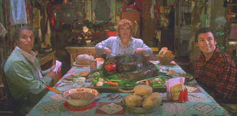

Touchstone/1998/90m/WS 1.85
 |
A feast fit for a moron©Touchstone |
The story is simplistic
enough. Professional wet rag waterboy Boucher mans the sidelines for Louisiana
University's top ranked football team. His primary function seems to have fluids poured or
sprayed on him or to have various members of the team expectorate into his complex array
of water dispensers. When Boucher is suddenly canned from his job by the nasty coach(How
did he get the job in the first place?)he heads home to the Bayous to the shelter of his
mother home cooking(Roasted whole boa constrictor with an apple in it's mouth, barbecued
baby alligators, electrocuted squirrel for dessert). Well, you've got to give the waterboy
credit. He picks himself up and finds a job providing liquid to the worst football team in
Louisiana history, the Slugs . Before you can say Adam Sandler, Coach Klein of SCLSU
discovers Boucher can tackle like Paul Bunyan chopping down a tree. You got the picture
now. Boucher becomes the star of the team and in the climatic confrontation gets to cut
coach Beaulieu and his Louisiana U boys down to size.
Adam Sandler plays Bobby Boucher as an aqua-savant. He knows his
water but little else. Sandler makes Boucher's speech patterns awfully close to imbecilic
and it is not flattering or entertaining. Sandler can do a lot better than this. Even in
his weakest screen efforts like Billy Madison, Sandler has not brought his
character to such a low state. Kathy Bates plays has her funniest screen moments as Momma
Boucher since her role in At Play in the Fields of the Lord. Henry Winkler is just
fine as Coach Klein and Fairuza Balk has some fun as Bobby's heart throb.
Director Frank Coraci makes a good looking movie out of The
Waterboy. His cutting is logical, but he working with pedestrian material. The
bodacious blues sound track rocks with all the power of a Boucher tackle.
The details are laid out with perfect simplicity on this DVD of The
Waterboy. Every silly expression on a cast of silly boys and girls it as clear as The
Waterboy's endless supply of the purest batch of H2O. The color is right on target
from the blood orange of the Mud Dog's uniforms to the baby blue of Boucher's outrageous
leisure suit. There are lots of surround details spread throughout the home theater
environment courtesy of a first rate Dolby Digital 5:1 surround mix. The DVD includes a
promo short and a theatrical trailer.